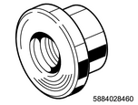
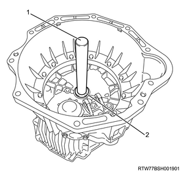
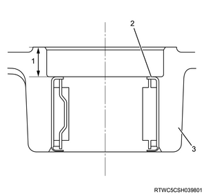
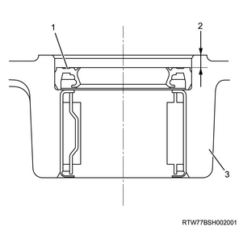

Front case reassembly (MUX)
1. Input shaft needle bearing installation
1. Install the needle bearing to the front case using special tool.
Note
- Install the input shaft needle bearing using the oil seal, bearing installer and grips.

SST: 5-8840-2846-0 - oil seal and bearing installer

SST: 5-8840-0007-0 - grip
Caution
- The stamped side should be installed facing the front of the transmission.

- Grip
- Oil seal and bearing installer
Note
- The input shaft needle bearing should be firmly fitted into the position shown in the diagram.

- 11 mm {0.43 in}
- Input shaft needle bearing
- Front case
2. Front oil seal installation
1. Apply the oil to the oil seal.
Note
- Apply the recommended lubricating oil to the outer surface of the new oil seal.
2. Apply the grease to the oil seal.
Note
- Apply BESCO L-2 grease or equivalent to the lip area.
3. Install the front oil seal to the front case using special tool.
Note
- Install using the oil seal, bearing installer and grip.
Caution
- Do not damage the lip area of the oil seal when firmly fitting.
SST: 5-8840-2846-0 - oil seal and bearing installer
SST: 5-8840-0007-0 - grip
- Grip
- Oil seal and bearing installer
Note
- Firmly fit the oil seal to the position as illustrated in the diagram.

- Front oil seal
- 4 mm {0.157 in}
- Front case
3. Reverse idle gear shaft installation
1. Install the reverse idle gear shaft to the front case.
Note
- Install using the straight pin.
2. Apply the oil to the reverse idle gear.
Note
- Apply the recommended lubricating oil to the gear inner surface.
3. Install the reverse idle gear to the reverse idle gear shaft.
4. Install the reverse shaft bracket to the reverse idle gear shaft.
4. Reverse idle shaft bolt installation
1. Install the reverse idle shaft bolt to the front case.
Note
- Install the reverse idle shaft bolt and gasket.
Tightening torque： 83 N・m { 8.5 kgf・m / 61 lb・ft }